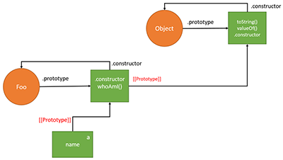

- Having learned another piece of the web development puzzle, things should be starting to come together now. What was different about functional programming from just HTML & CSS? Talk specifically about some new challenges you faced and how you overcame them individually or with the help of your classmates/instructor.
- The workload has also increased substantially from the intro courses. How have you learned to cope with this (i.e. strategies that worked, or didn’t)? How can you improve on these as we enter harder and harder material?
- What was your favorite part of this course? It can even be as simple as your favorite function. How can you see it being used in the real world (e.g. your future web development job or creating a full web application yourself)?
Functional programming (Javascript) allows for client side user interaction with a web page, and also improves a users's experience.
